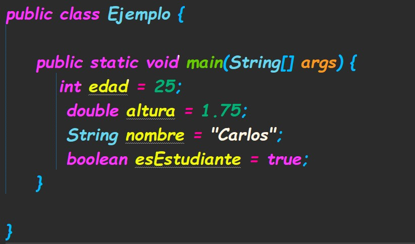

Variables y sus tipos
Las variables en programación son espacios de memoria donde se almacenan valores que pueden cambiar durante la ejecución de un programa. Dependiendo del lenguaje de programación, existen distintos tipos de variables, los cuales determinan el tipo de dato que pueden contener. A continuación, se presentan algunos de los tipos de variables más comunes:
- Variables enteras (int): Almacenan números enteros.
- Variables de punto flotante (float): Almacenan números decimales.
- Variables de cadena (string): Almacenan secuencias de caracteres.
- Variables booleanas (bool): Almacenan valores de verdadero o falso.
Las variables son esenciales en cualquier lenguaje de programación, ya que permiten almacenar y manipular datos durante la ejecución del programa. Al asignar valores a las variables, se pueden realizar cálculos, procesar información y tomar decisiones dentro del código.